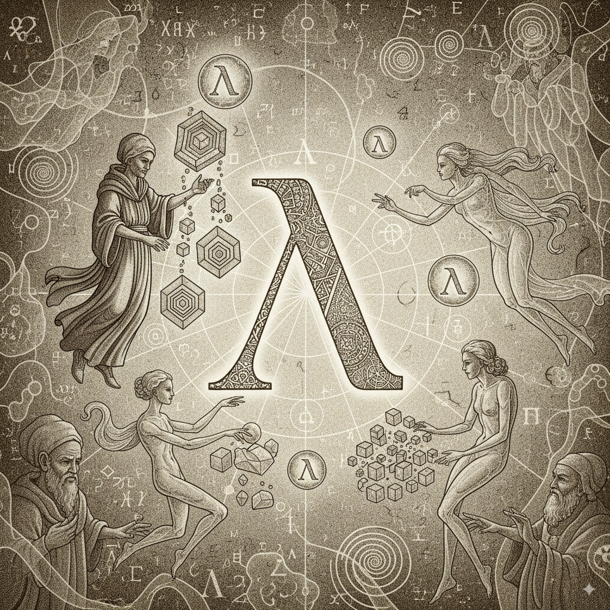

3 Functional Programming: The Cornerstone of Reproducible Analysis
What you’ll learn by the end of this chapter: * Why functional programming is crucial for reproducible, testable, and collaborative data science. * How to write self-contained, “pure” functions in both R and Python. * How to use functional concepts like map, filter, and reduce to replace error-prone loops. * How writing functions makes your code easier to review, debug, and even generate with LLMs.
3.1 Introduction: From Scripts to Functions
So far, we’ve established two pillars of reproducible data science: 1. Reproducible Environments (with Nix): Ensuring everyone has the exact same tools (R, Python, system libraries) to run the code. 2. Reproducible History (with Git): Ensuring everyone has the exact same version of the code and can collaborate effectively.
Now we turn to the third and arguably most important pillar: writing reproducible code itself. A common way to start a data analysis is by writing a script: a sequence of commands that are executed from top to bottom.
# R script example
library(dplyr)
data(mtcars)
heavy_cars <- filter(mtcars, wt > 4)
mean_mpg_heavy <- mean(heavy_cars$mpg)
print(mean_mpg_heavy)# Python script example
import pandas as pd
mtcars = pd.read_csv("mtcars.csv") # Assume the file exists
heavy_cars = mtcars[mtcars['wt'] > 4]
mean_mpg_heavy = heavy_cars['mpg'].mean()
print(mean_mpg_heavy)This works, but it has a hidden, dangerous property: state. The script relies on variables like heavy_cars existing in the environment, making the code hard to reason about, debug, and test. If scripting with state is a crack in the foundation of reproducibility, then using computational notebooks is a gaping hole.
Notebooks like Jupyter introduce an even more insidious form of state: the cell execution order. You can execute cells out of order, meaning the visual layout of your code has no relation to how it actually ran. This is a recipe for non-reproducible results and a primary cause of the “it worked yesterday, why is it broken today?” problem.
The solution to this chaos is to embrace a paradigm that minimizes state: Functional Programming (FP). Instead of a linear script, we structure our code as a collection of self-contained, predictable functions. To support this, we will work exclusively in plain text files (.R, .py), which enforce a predictable, top-to-bottom execution, and use literate programming (using Quarto). The power of FP comes from the concept of purity, borrowed from mathematics. A mathematical function has a beautiful property: for a given input, it always returns the same output. sqrt(4) is always 2. Its result doesn’t depend on what you calculated before or on a random internet connection. Our Nix environments handle the “right library” problem; purity handles the “right logic” problem. Our goal is to write our analysis code with this same level of rock-solid predictability.
3.1.1 Why Does This Matter for Data Science?
Adopting a functional style brings massive benefits that directly connect to our previous chapters:
- Unit Testing is Now Possible: You can’t easily test a 200-line script. But you can easily test a small function that does one thing. Does
calculate_mean_mpg(data)return the correct value for a sample dataset? This makes your code more reliable. - Code Review is Easier (Git Workflow): As we saw in the Git chapter, reviewing a small, self-contained change is much easier than reviewing a giant, sprawling one. A Pull Request that just adds or modifies a single function is simple for your collaborators to understand and approve.
- Working with LLMs is More Effective: It’s difficult to ask an LLM to “fix my 500-line analysis script.” It’s incredibly effective to ask, “Write a Python function that takes a pandas DataFrame and a column name, and returns the mean of that column, handling missing values. Also, write three
pytestunit tests for it.” Functions provide the clear boundaries and contracts that LLMs excel at working with. - Readability and Maintainability: Well-named functions are self-documenting.
starwars %>% group_by(species) %>% summarize(mean_height = mean(height))is instantly understandable. The equivalentforloop is a puzzle you have to solve.
3.2 Purity and Side Effects
A pure function has two rules: 1. It only depends on its inputs. It doesn’t use any “global” variables defined outside the function. 2. It doesn’t change anything outside of its own scope. It doesn’t modify a global variable or write a file to disk. This is called having “no side effects.”
Consider this “impure” function in Python:
# IMPURE: Relies on a global variable
discount_rate = 0.10
def calculate_discounted_price(price):
return price * (1 - discount_rate) # What if discount_rate changes?
print(calculate_discounted_price(100))
# > 90.0
discount_rate = 0.20 # Someone changes the state
print(calculate_discounted_price(100))
# > 80.0 -- Same input, different output!The pure version passes all its dependencies as arguments:
# PURE: All inputs are explicit arguments
def calculate_discounted_price_pure(price, rate):
return price * (1 - rate)
print(calculate_discounted_price_pure(100, 0.10))
# > 90.0
print(calculate_discounted_price_pure(100, 0.20))
# > 80.0Now the function is predictable and self-contained.
3.2.1 Handling “Impure” Operations like Randomness
Some operations, like generating random numbers, are inherently impure. Each time you run rnorm(10) or numpy.random.rand(10), you get a different result.
The functional approach is not to avoid this, but to control it by making the source of impurity (the random seed) an explicit input.
In R, the {withr} package helps create a temporary, controlled context:
library(withr)
# This function is now pure! For a given seed, the output is always the same.
pure_rnorm <- function(n, seed) {
with_seed(seed, {
rnorm(n)
})
}
pure_rnorm(n = 5, seed = 123)
pure_rnorm(n = 5, seed = 123)In Python, numpy provides a more modern, object-oriented way to handle this, which is naturally functional:
import numpy as np
# Create a random number generator instance with a seed
rng = np.random.default_rng(seed=123)
# Now, calls on this 'rng' object are deterministic within its context
print(rng.standard_normal(5))
# If we re-create the same generator, we get the same numbers
rng2 = np.random.default_rng(seed=123)
print(rng2.standard_normal(5))The key is the same: the “state” (the seed) is explicitly managed, not hidden globally.
However, this introduces a concept from another programming paradigm: Object-Oriented Programming (OOP). The rng variable is not just a value; it’s an object that bundles together data (its internal seed state) and methods that operate on that data (.standard_normal()). This is called encapsulation. This is a double-edged sword for reproducibility. On one hand, it’s a huge improvement over hidden global state. On the other, the rng object itself is now a stateful entity. If we called rng.standard_normal(5) a second time, it would produce different numbers because its internal state would have been mutated by the first call.
In a purely functional world, we would avoid creating such stateful objects. However, in the pragmatic world of Python data science, this is often unavoidable. Core libraries like pandas, scikit-learn, and matplotlib are fundamentally object-oriented. You create DataFrame objects, model objects, and plot objects, all of which encapsulate state. Our guiding principle, therefore, must be one of careful management: use functions for the flow and logic of your analysis, and treat objects from libraries as values that are passed between these functions. Avoid building your own complex classes with hidden state for your data pipeline. A pipeline composed of functions (df2 = clean_data(df1); df3 = analyze_data(df2)) is almost always more transparent and reproducible than an object-oriented one (pipeline.load(); pipeline.clean(); pipeline.analyze()).
3.2.2 Can We Make This Truly Pure?
This naturally raises this next question: can we force this numpy example to be truly pure? A pure function cannot have side effects, which means it cannot mutate the rng object’s internal state. To achieve this, our function must take the generator’s current state as an explicit input and return a tuple containing both the desired random numbers and the new, updated state of the generator.
Let’s write a wrapper function that does exactly this:
import numpy as np
def pure_standard_normal(generator_state, n_samples):
"""
A pure function to generate standard normal random numbers.
Args:
generator_state: The current state of a numpy BitGenerator.
n_samples: The number of samples to generate.
Returns:
A tuple containing (random_numbers, new_generator_state).
"""
# 1. Create a temporary generator instance from the input state
temp_rng = np.random.Generator(np.random.PCG64(generator_state))
# 2. Generate the numbers (this mutates the *temporary* generator)
numbers = temp_rng.standard_normal(n_samples)
# 3. Extract the new state from the temporary generator
new_state = temp_rng.bit_generator.state
# 4. Return both the result and the new state
return (numbers, new_state)
# --- How to use this pure function ---
# 1. Get an initial state from a seed
initial_state = np.random.PCG64(123).state
# 2. First call: provide the state, get back numbers and a *new* state
first_numbers, state_after_first_call = pure_standard_normal(initial_state, 5)
print("First call results:", first_numbers)
# 3. Second call: MUST use the new state from the previous call
second_numbers, state_after_second_call = pure_standard_normal(state_after_first_call, 5)
print("Second call results:", second_numbers)
# Proof of purity: If we re-use the initial state, we get the exact same "first" result
proof_numbers, _ = pure_standard_normal(initial_state, 5)
print("Proof call results:", proof_numbers)As you can see, this is now 100% pure and predictable. The function pure_standard_normal will always produce the same output tuple for the same input tuple.
3.2.2.1 Is This Feasible in Practice?
While this is a powerful demonstration of functional principles, it is often not practical for day-to-day data science in Python. Manually passing the state variable from one function to the next throughout an entire analysis script (state_1, state_2, state_3…) would be extremely verbose and cumbersome.
The key takeaway is understanding the trade-off. The object-oriented approach (rng = np.random.default_rng(seed=123)) is a pragmatic compromise. It encapsulates the state in a predictable way, which is a vast improvement over hidden global state, even if it’s not technically “pure”. If you have to use Python: treat stateful library objects like rng as values that are created once with a fixed seed and passed into your pure analysis functions. This gives you 99% of the benefit of reproducibility with a fraction of the complexity.
This difference in the “feel” of functional composition between R’s pipe and Python’s method chaining is no accident; it reflects the deep-seated design philosophies of each language. This context is crucial for understanding why certain patterns feel more “natural” in each environment. R’s lineage traces back to the S language, which was itself heavily influenced by Scheme, a dialect of Lisp and a bastion of functional programming. Consequently, treating data operations as a series of function transformations is baked into R’s DNA. The entire Tidyverse ecosystem, with its ubiquitous pipe, is a modern implementation of this functional heritage.
Python, in contrast, was designed with a different set of priorities, famously summarized in its Zen: “There should be one—and preferably only one—obvious way to do it.” Its creator, Guido van Rossum, historically argued that explicit for loops and list comprehensions were more readable and “Pythonic” than functional constructs like map and lambda. He was so committed to this principle of one clear path that he even proposed removing these functions from the language entirely at one point.
R is fundamentally a functional language that has acquired object-oriented features, while Python is a quintessential object-oriented language with powerful functional capabilities. Recognizing this history helps explain why a chain of functions feels native in R, while method chaining on objects is the default in pandas and polars. My goal in this course is for you to master the functional paradigm so you can apply it effectively in either language, leveraging the native strengths of each.
3.3 Writing Your Own Functions
Let’s learn the syntax. The goal is always to encapsulate a single, logical piece of work.
3.3.0.1 In R
R functions are first-class citizens. You can assign them to variables and pass them to other functions.
# A simple function
calculate_ci <- function(x, level = 0.95) {
# Calculate the mean and standard error
se <- sd(x, na.rm = TRUE) / sqrt(length(x))
mean_val <- mean(x, na.rm = TRUE)
# Calculate the confidence interval bounds
alpha <- 1 - level
lower <- mean_val - qnorm(1 - alpha/2) * se
upper <- mean_val + qnorm(1 - alpha/2) * se
# Return a named vector
# the `return()` statement is not needed at the end
# but can be useful for early returning a result
c(mean = mean_val, lower = lower, upper = upper)
}
# Use it
data <- c(1.2, 1.5, 1.8, 1.3, 1.6, 1.7)
calculate_ci(data)For data analysis, you’ll often want to write functions that work with data frames and column names. The {dplyr} package uses a special technique called “tidy evaluation” for this.
library(dplyr)
# A function that summarizes a column in a dataset
summarize_variable <- function(dataset, var_to_summarize) {
dataset %>%
summarise(
n = n(),
mean = mean({{ var_to_summarize }}, na.rm = TRUE),
sd = sd({{ var_to_summarize }}, na.rm = TRUE)
)
}
# The {{ }} (curly-curly) syntax tells dplyr to use the column name
# passed into the function.
starwars %>%
group_by(species) %>%
summarize_variable(height)This is incredibly powerful for creating reusable analysis snippets. To learn more, read about programming with {dplyr} here.
3.3.0.2 In Python
Python’s syntax is similar, using the def keyword. Type hints are a best practice for clarity.
import pandas as pd
import numpy as np
# A function to summarize a column in a DataFrame
def summarize_variable_py(dataset: pd.DataFrame, var_to_summarize: str) -> pd.DataFrame:
"""Calculates summary statistics for a given column."""
summary = dataset.groupby('species').agg(
n=(var_to_summarize, 'size'),
mean=(var_to_summarize, 'mean'),
sd=(var_to_summarize, 'std')
).reset_index()
return summary
# Load data (assuming starwars.csv exists)
# starwars_py = pd.read_csv("starwars.csv")
# summarize_variable_py(starwars_py, 'height')3.4 The Functional Toolkit: Map, Filter, and Reduce
Once you start thinking in functions, you’ll notice common patterns emerge. Most for loops can be replaced by one of three core functional concepts: mapping, filtering, or reducing. These operations are handled by “higher-order functions”—functions that take other functions as arguments. Mastering them is key to writing elegant, declarative code.
3.4.1 1. Mapping: Applying a Function to Each Element
The pattern: You have a list of things, and you want to perform the same action on each element, producing a new list of the same length.
This is the most common replacement for a for loop. Instead of manually iterating and storing results, you just state your intent: “map this function over this list.”
3.4.1.1 In R with purrr::map()
The {purrr} package is the gold standard for functional programming in R. The map() family is its workhorse.
map(): Always returns a list.map_dbl(): Returns a vector of doubles (numeric).map_chr(): Returns a vector of characters (strings).map_lgl(): Returns a vector of logicals (booleans).map_dfr(): Returns a data frame by row-binding the results.
Example: Calculate the mean of every column in a data frame.
library(purrr)
# The classic for-loop way (verbose and clunky)
# Allocate an empty vector with the right size
means_loop <- vector("double", ncol(mtcars))
for (i in seq_along(mtcars)) {
means_loop[[i]] <- mean(mtcars[[i]], na.rm = TRUE)
}
print(means_loop)
# The functional way with map_dbl()
means_functional <- map_dbl(mtcars, mean, na.rm = TRUE)
print(means_functional)The map() version is not just shorter; it’s safer. You can’t make an off-by-one error, and you don’t have to pre-allocate means_loop. The code clearly states its purpose.
3.4.1.2 In Python with List Comprehensions and map()
Python’s most idiomatic tool for mapping is the list comprehension, which we saw earlier. It’s concise and highly readable.
numbers = [1, 2, 3, 4, 5]
squares = [n**2 for n in numbers]
# > [1, 4, 9, 16, 25]Python also has a built-in map() function, which returns a “map object” (an iterator). You usually wrap it in list() to see the results. It’s most useful when you already have a function defined.
def to_upper_case(s: str) -> str:
return s.upper()
words = ["hello", "world"]
upper_words = list(map(to_upper_case, words))
# > ['HELLO', 'WORLD']3.4.2 2. Filtering: Keeping Elements That Match a Condition
The pattern: You have a list of things, and you want to keep only the elements that satisfy a certain condition. The condition is defined by a function that returns TRUE or FALSE.
3.4.2.1 In R with purrr::keep() or purrr::discard()
keep() retains elements where the function returns TRUE. discard() does the opposite.
Example: From a list of data frames, keep only the ones with more than 100 rows.
# setup: create a list of data frames
df1 <- data.frame(x = 1:50)
df2 <- data.frame(x = 1:200)
df3 <- data.frame(x = 1:75)
list_of_dfs <- list(a = df1, b = df2, c = df3)
# The functional way to filter the list
large_dfs <- keep(list_of_dfs, ~ nrow(.x) > 100)
print(names(large_dfs))3.4.2.2 In Python with List Comprehensions
List comprehensions have a built-in if clause that makes filtering incredibly natural.
numbers = [1, 10, 5, 20, 15, 30]
# Keep only numbers greater than 10
large_numbers = [n for n in numbers if n > 10]
# > [20, 15, 30]Python also has a built-in filter() function, which, like map(), returns an iterator.
def is_even(n: int) -> bool:
return n % 2 == 0
numbers = [1, 2, 3, 4, 5, 6]
even_numbers = list(filter(is_even, numbers))
# > [2, 4, 6]3.4.3 3. Reducing: Combining All Elements into a Single Value
The pattern: You have a list of things, and you want to iteratively combine them into a single summary value. You start with an initial value and repeatedly apply a function that takes the “current total” and the “next element.”
This is the most complex of the three but is powerful for things like summing, finding intersections, or joining a list of data frames.
3.4.3.1 In R with purrr::reduce()
Example: Find the total sum of a vector of numbers.
# reduce() will take the first two elements (1, 2), apply `+` to get 3.
# Then it takes the result (3) and the next element (3), applies `+` to get 6.
# And so on.
total_sum <- reduce(c(1, 2, 3, 4, 5), `+`)
# This is equivalent to 1 + 2 + 3 + 4 + 5
print(total_sum)A more practical data science example: find all the column names that are common to a list of data frames.
# Get the column names of each df in the list
list_of_colnames <- map(list_of_dfs, names)
print(list_of_colnames)
# Use reduce with the `intersect` function to find common elements
common_cols <- reduce(list_of_colnames, intersect)
print(common_cols)3.4.3.2 In Python with functools.reduce
The reduce function was moved out of the built-ins and into the functools module in Python 3 because it’s often less readable than an explicit for loop for simple operations like summing. However, it’s still the right tool for more complex iterative combinations.
from functools import reduce
import operator
numbers = [1, 2, 3, 4, 5]
# Use reduce with the addition operator to sum the list
total_sum_py = reduce(operator.add, numbers)
# > 15
# You can also use a lambda function
total_product = reduce(lambda x, y: x * y, numbers)
# > 1203.5 The Power of Composition
The final, beautiful consequence of a functional style is composition. You can chain functions together to build complex workflows from simple, reusable parts. This is exactly what the pipe operators (|> in R, %>% from {magrittr}) and method chaining (the . in pandas) are designed for.
This R code is a sequence of function compositions:
starwars %>%
filter(!is.na(mass)) %>%
select(species, sex, mass) %>%
group_by(sex, species) %>%
summarise(mean_mass = mean(mass), .groups = "drop")This is equivalent to summarise(group_by(select(filter(starwars, ...)))). The pipe makes it readable.
The same idea applies in Python with pandas:
# (starwars_py
# .dropna(subset=['mass'])
# .filter(items=['species', 'sex', 'mass'])
# .groupby(['sex', 'species'])
# ['mass'].mean()
# .reset_index()
# )Each step is a function that takes a data frame and returns a new, transformed data frame. By combining map, filter, and reduce with this compositional style, you can express complex data manipulation pipelines without writing a single for loop. This makes your code more declarative, less prone to bugs, and easier to reason about—a perfect fit for a reproducible workflow.